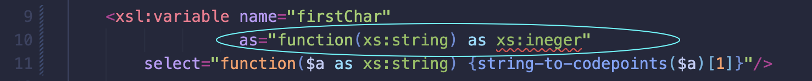
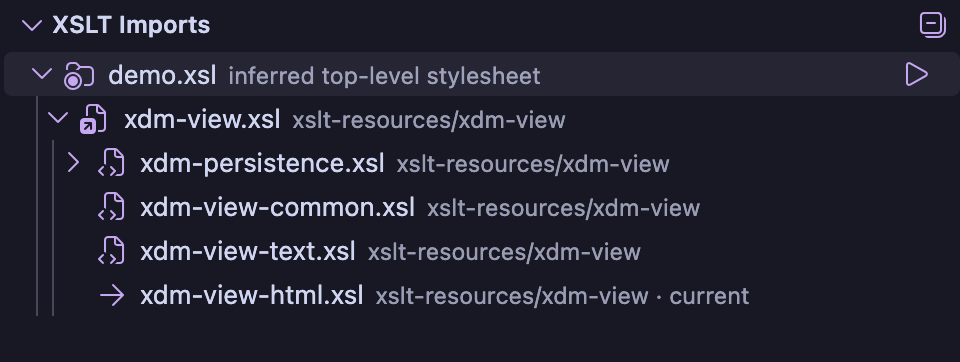
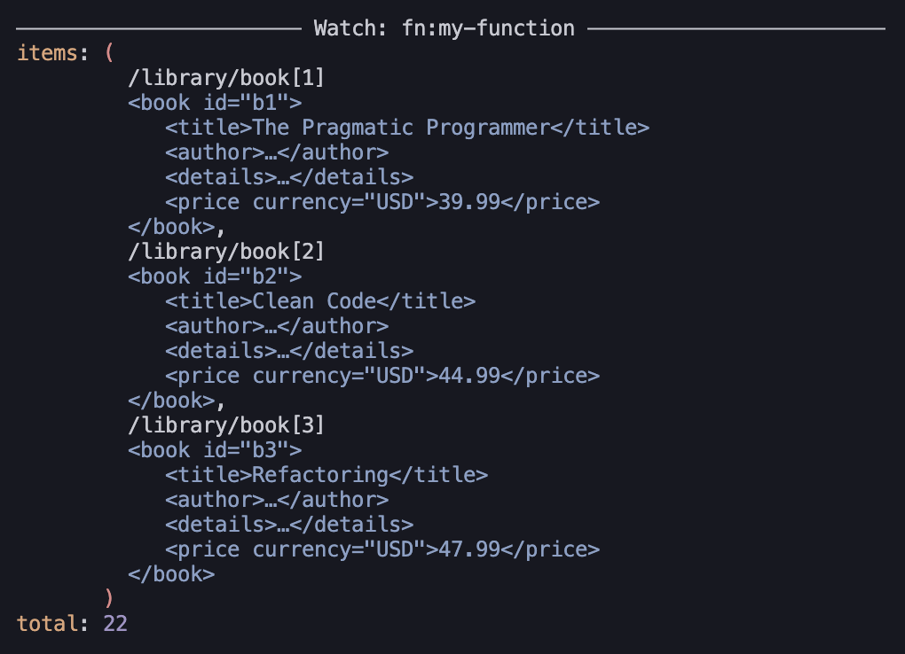

XSLT Editing, Testing and Debugging in VS Code
XSLT is a language that rewards good tooling. A stylesheet is made of many small templates and functions that call each other, and an XPath expression buried in an attribute can be wrong in ways that only show up on the right input. Working well with it means seeing problems as you type, trying changes quickly, testing what you've written, and finding out what a stylesheet actually did.
These pages describe what that looks like in Visual Studio Code with DeltaXignia's free XSLT/XPath extension, for XSLT 3.0 and XPath 3.1 and the XSLT 4.0 and XPath 4.0 features of Saxon 13. For step-by-step instructions on each feature, see the user guide.



xs:integer.


Where to start
- Editing XSLT - completion, checking and navigation in the editor.
- Testing XSLT - unit tests with XSpec, and test coverage.
- Debugging and profiling XSLT - breakpoints, stepping and timings.
- Refactoring and reviewing XSLT - changing a stylesheet safely, and finding your way around someone else's.
- Schematron - rules for XML, written, validated and debugged in the same editor.
- AI for XSLT - using AI assistants such as GitHub Copilot or Claude Code with XSLT.
Frequently asked questions
Can Visual Studio Code be used as an XSLT editor?
Yes. With the XSLT/XPath extension, VS Code checks XSLT and XPath as you type, completes and navigates code, runs stylesheets with Saxon, debugs and profiles them, and runs XSpec tests - for XSLT 3.0 and the XSLT 4.0 features of Saxon 13.
Does it work with Saxon-HE?
Yes. Everything works with the free Saxon-HE except the profiler's timings, which need Saxon-PE or Saxon-EE.
Is there an XPath editor or tester?
Yes. XPath expressions are checked and completed wherever they appear in a stylesheet, and the guide describes how to find nodes with XPath in an XML file and how to use XPath notebooks.
Get the extension. Install XSLT/XPath for Visual Studio Code from the Marketplace, then read the user guide.